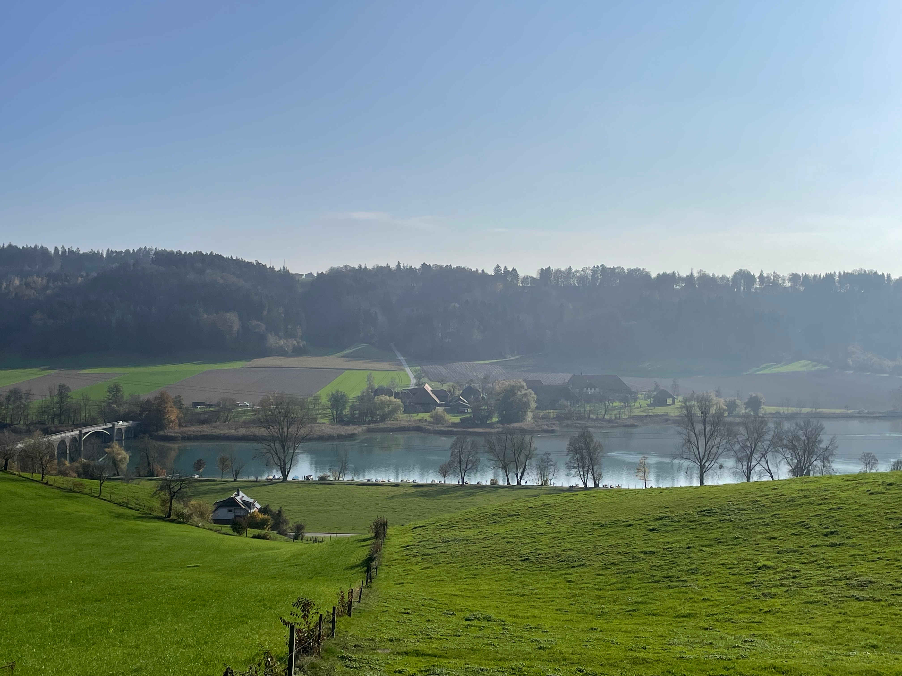
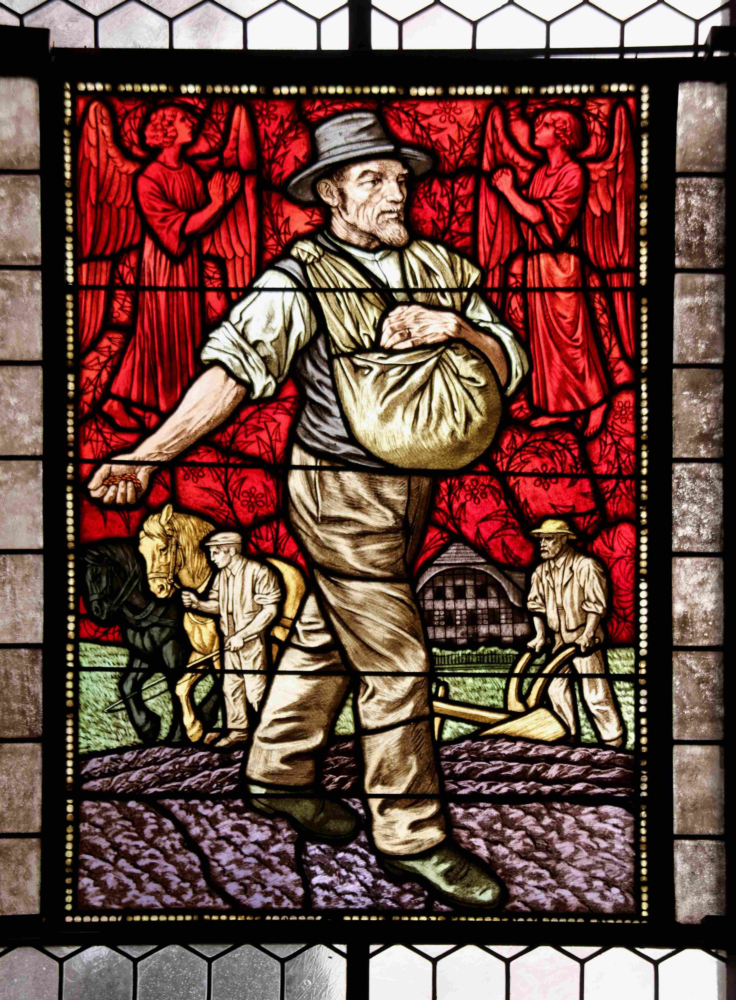
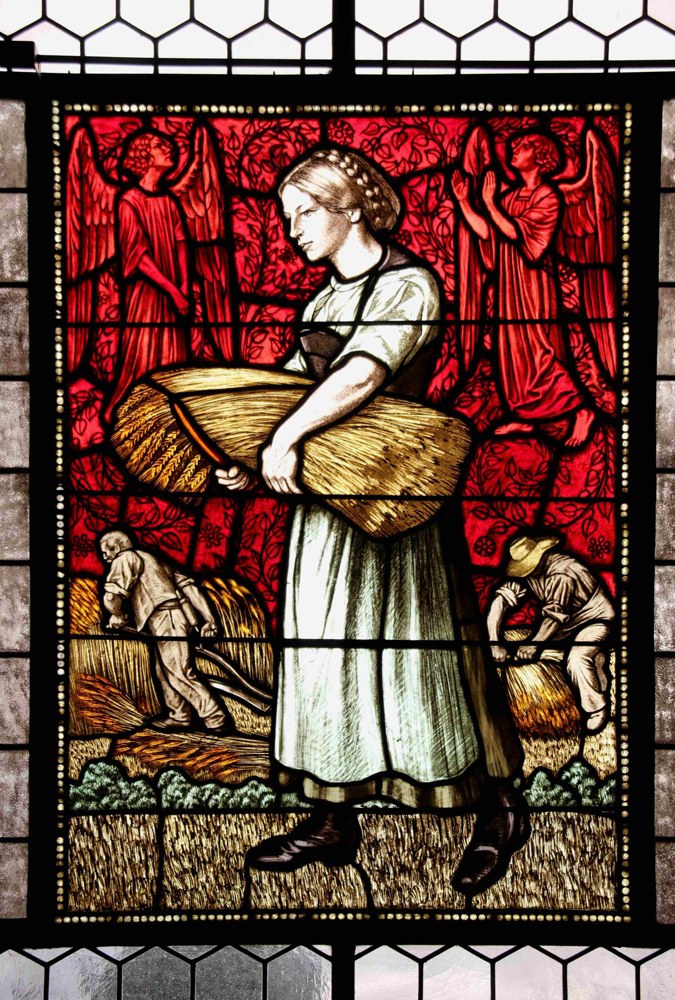
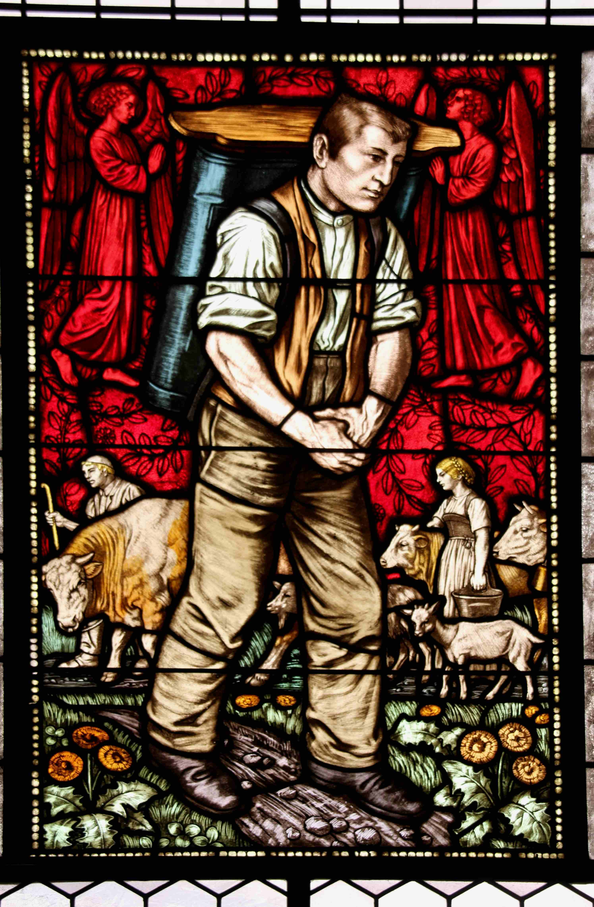
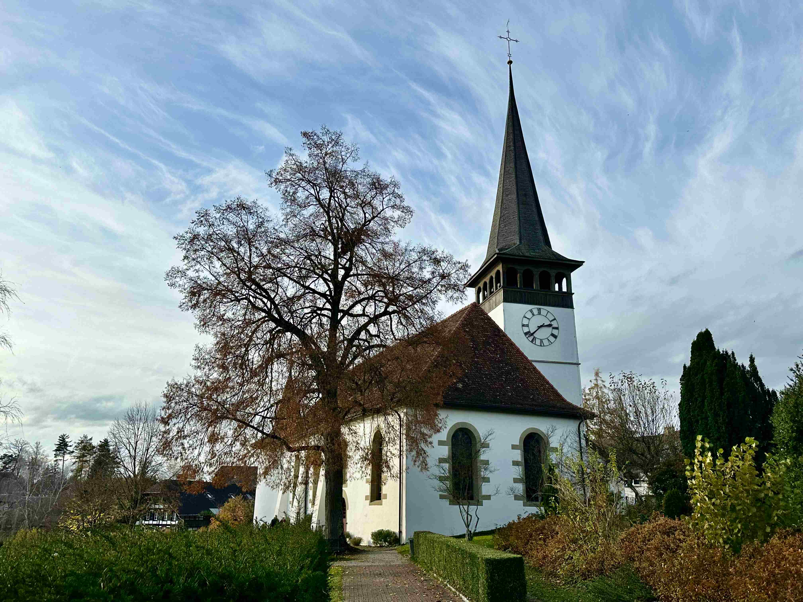

Knapp 20 km hat man nach einer Wanderung um den Wohlensee bereits in den Beinen, bevor man sich die letzte Steigung hoch zum Dorfzentrum von Wohlen bei Bern müht. Doch bevor es zur Postautohaltestelle geht, lockt die Bank auf dem Friedhof vor der weissen Kirche. «Wenn, dann hier» ging es wohl schon so mancher Wanderfreudigen durch den Kopf. Wer auf dieser Hangkante seine (letzte) Ruhe geniesst, der sieht die Uferlinie des blaugrünen Sees mit dem Weiler ‹Wohlei› und der Brücke, die über den See zu ihm führt. Am Horizont zieht sich der Wald ebenso lang wie der See. Alles wirkt, als sei es schon immer so gewesen.
Blick auf den Wohlensee von der Kirche Wohlen bei Bern. (Foto: Ulrike Münger)
Glasmalereien von Rudolf Münger (1862–1929) im Chor der Kirche Wohlen bei Bern
Die meisten Dörfer der Gemeinde Wohlen bei Bern wurden zum ersten Mal im
13. Jahrhundert schriftlich erwähnt. Doch durch die zwei romanischen
Fensterchen, die bei einer Restauration der Kirche freigelegt wurden,
wissen wir, dass schon im 12. Jahrhundert hier gesiedelt wurde. Die
heutigen Fenster im Chor sind mit Glasmalereien des Berner Malers Rudolf
Münger (1862–1929) geschmückt. Die Bilder sind nach der grossen
Renovation von 1907 in die Kirche eingezogen. Damals zierten der Sämann,
die Garbenbinderin und der Küher noch die Südseite des Schiffs – mit
direktem Blick auf den Wohlensee.
Für so manche Städter und Städterinnen, die während der Corona-Pandemie
mit Stadtflucht geliebäugelt haben, mögen diese Motive Idylle und heile
Welt verkörpern. Die hiesigen Bauernfamilien – von denen einige noch
immer die Herausforderungen ihres Lebens im «Bauernjahr» festhalten –
erkennen in ihnen wohl die Arbeitsrealität ihrer Vorfahren wieder. Diese
brachte mit sich, dass man abhängig vom Jahreszyklus und vom Wetter war
und in der Zeit vor der Mechanisierung die Ernte in Handarbeit
einbrachte. Erinnerungen an Familiengeschichten von der Subventionierung
der Saatkartoffeln und von der Maikäferplage werden wach.
Sämann, Garbenbinderin und Küher
So oder so, die Fenster von Rudolf Münger setzen den Betrachter:innen eine besondere Brille auf. Es sind Fenster in eine andere Zeit. Denn was auf den ersten Blick wie landwirtschaftliche Idylle wirken kann, entpuppt sich auf den zweiten Blick als Zeugnis eines aufregenden Jahrhunderts.
Der Sämann, Glasmalerei von Rudolf Münger (1862–1929) im Chor der Kirche Wohlen bei Bern. (Foto: Mirco Bernasconi)
Ein junger Mann und eine junge Frau tauchen in den Fensterbildern mal im Vordergrund und mal im Hintergrund auf. Auf dem ersten Bild ist der junge Mann im Hintergrund auf dem Acker vor dem Bauernhaus zu sehen. Er führt die beiden kräftigen Pferde, die vor einen Pflug gespannt sind. Ein älterer, erfahrener Bauer zieht mit ihrer Hilfe die Ackerfurchen. Der Vordergrund des Bildes zeigt den darauffolgenden Arbeitsschritt. Ein Mann mit gefurchtem Gesicht hat den Arm bereits ausgeholt und wird sogleich das Saatgut ausstreuen.
Die Garbenbinderin, Glasmalerei von Rudolf Münger (1862–1929) im Chor der Kirche Wohlen bei Bern (Foto: Mirco Bernasconi)
In der Szene des zweiten Bildes trägt die junge Frau in der Bildmitte die gesammelten Garben weg. Der ältere Mann im Hintergrund hat die Halme zuvor mit seiner grossen geschwungenen Sense geschnitten. Ein Mann mit Hut, im Rücken der jungen Frau, bindet ein Bündel Garben zusammen. Die detailreich herausgearbeiteten Muskeln an Mensch und Tier zeigen in allen drei Bildern, dass alle Schritte noch durch Muskelkraft und Pferdestärken ausgeführt wurden. Die körperliche Anstrengung dieser Vorgänge ist dem Bild in beeindruckender Weise eingeschrieben. Ob der Boden und das Bauernhaus im Hintergrund noch Lehensgut oder schon Privatbesitz sind, erzählt das Bild nicht. Gegen Mitte des 19. Jahrhunderts ist beides möglich. Im roten Himmel, der über allen drei Szenen schwebt, beten zwei Engel. Den Blick Richtung Himmel gerichtet, setzen sie sich für das Wohl der Bauern ein. Ihr Wohlergehen war nicht selbstverständlich. Es hat seinen Grund, dass im dritten Bild plötzlich eine Szene der Milchwirtschaft dargestellt ist. In der zweiten Hälfte des 19. Jahrhunderts ermöglichte der Eisenbahnbau nicht nur inländischen Fortschritt, sondern auch europäische Konkurrenz. Der Getreidepreis sank so sehr, dass ein Grossteil der einheimischen Bauern auf die Milchwirtschaft umsatteln musste. Schon bald kamen zu den knapp 3000 Menschen in der Einwohnergemeinde rund 1500 Kühe hinzu.
Der Küher, Glasmalerei von Rudolf Münger (1862–1929) im Chor der Kirche Wohlen bei Bern. (Foto: Mirco Bernasconi)
So ist im dritten Bild nur noch die junge Generation zu sehen. Ein Hirte mit Stab führt in Begleitung des Bullen die Kuh- und Ziegenherde an. Die junge Frau begleitet die Tiere liebevoll zugewandt. Den Melkeimer hält sie bereits in der Hand. Der junge Mann im Bildzentrum erinnert an denjenigen, der im ersten Bild noch die Pferde führte. Nun erscheint er als Küher mit einem Milchtornister auf dem Rücken. Auch hier ist an mechanische Unterstützung noch nicht zu denken. Zumindest bis zum Zusammenbruch des Käsemarktes von 1880. Die betroffenen Bauern reagierten auf diese erneute Bedrohung wiederum schnell und taten sich zu landwirtschaftlichen Genossenschaften zusammen. Diese Zentralisierung brachte die Mechanisierung in Gang. Idyllisch ist das dargestellte bäuerliche Leben also nur in Hinblick auf den durch die Fenster schimmernden Zusammenhalt. Ob dieser ein Verdienst der Engel ist, die auch hier im oberen Bildteil beten, bleibt offen.
Wieviel ist ein Familienhof wert?
Dies alles war, bevor in der Landschaft die Herren aus der Stadt mit
ihren rot-weiss gestrichenen Messlatten und den Fernrohren auf den
dreibeinigen Gestellen erschienen. Nachdem die Eisenbahn den Ackerbau
bedroht hatte, sorgte nun das geplante Kraftwerk von Mühleberg für
Aufregung. Hierfür musste die Aare gestaut werden und 250 Hektaren Land
sollten geflutet werden – und mit ihnen rund 20 Bauernhöfe, die alte
Käserei in Hofen und die Mühle von Mühleberg. Fast 15 km sollte der neue
Stausee von Mühleberg, der heutige Wohlensee, messen. Den Bau dieses
imposanten Kraftwerkes, der durch mehr als 1000 Arbeiter ermöglicht
wurde, hat Rudolf Münger ebenfalls zeichnerisch begleitet.
Der übergeordnete Nutzen der Innovation schien zu locken, aber den
betroffenen Bauernfamilien bedrohte er die Existenz. Doch es waren
schwere Zeiten. Draussen tobte der 1. Weltkrieg, die spanische Grippe
tobte drinnen. Lebensmittel und Futter wechselten nur gegen Höchstpreise
den Besitzer. Zu einer schlechten Kartoffelernte kam 1917 der
Zusammenbruch der Getreidezufuhr hinzu. Lebensmittel mussten rationiert
werden. Der Pfarrer von Wohlen zählte zu dieser Zeit 450 Bedürftige, das
waren ein Achtel der Bevölkerung. Unter solchen Lebensbedingungen muss
die ordentliche Ablösesumme von einem Franken pro Quadratmeter
verlockend gewesen sein.
Verglichen mit dieser Lebenssituation konservieren die Müngerfenster
also tatsächlich etwas «heile Welt». Vielleicht lag es an der Müdigkeit
im Angesicht dieser Herausforderungen, oder an der Hoffnung, die in der
neuen fortschrittlichen Zeit lag, dass der Widerstand gegen den Bau des
Kraftwerk Mühleberg nicht grösser ausfiel. 39 Einsprachen – wovon nur 13
Einsprecher in der Gemeinde Wohlen sesshaft waren – gingen gegen den Bau
des Kraftwerkes ein. Der Anschluss an die Elektrizität versprach den
Eingang in ein neues, helleres Zeitalter. Dabei entsprach der Rückgriff
auf erneuerbare Energien dem Mangel an Petrol und Kohle während des
ersten Weltkrieges. An Umweltbewusstsein war noch nicht zu denken. Das
immense Bauunternehmen in Mühleberg jedenfalls muss surreal angemutet
haben.
109 Eigentümer mussten für insgesamt mindestens 250 Hektare Land, die ab
dem 23.8.1920 geflutet wurden, entschädigt werden. Nicht alle konnten so
erfinderisch vorgehen wie die Besitzer der Käserei von Hofen. Sie trugen
kurzerhand das Haus ab und bauten es weiter oben bei Uettligen wieder
auf.
Der Blick in ein vergangenes Jahrhundert
Rund 20 Bauernhäuser wurden dem Fortschritt geopfert und versanken im See. Vielleicht war das Haus aus dem Fenster mit der Pflugszene auch darunter. Auch wenn die Fenster seit der Renovation 1966–1970 im Chor und nicht mehr mit Blick auf den See hängen, erinnern sie doch an das vergangene Leben an der alten Uferlinie der Aare. Die Fenster sind zu einem Kraft- und Erinnerungsort geworden. Sie halten die Erinnerung an das bäuerliche Leben im 19. und 20. Jahrhundert wach und stärken damit für viele das Gefühl von Heimat. Sie verweisen auf den enormen Kraftakt, den dieses Leben immer wieder von den Bäuer:innen abverlangte und auf die grosse Flexibilität, die sie aufbringen mussten. Die Fenster erinnern indirekt auch an das grosse «Bauernopfer» für das Kraftwerk von Mühleberg.
Reformierte Kirche Wohlen bei Bern. (Foto: Adriana Basso Schaub)
Ulrike Münger ist Pfarrerin in der reformierten Kirche in Wohlen bei Bern.
Weitere Artikel von {{ author.author }} finden Sie hier:
Zur Vertiefung:
- Brodbeck, Thoman/Schüpbach, Andrea: Wohlen BE im 19. Und 20. Jahrhundert. Eine Gemeinde zwischen Stadt und Land, Bern 2006.
- von Tavel, Rudolf: Von grosser Arbeit. Kraftwerk und Stausee von Mühleberg in ihrer Entstehung. Mit farbigen Bildern von Carlo v. Courten und Zeichnungen von Rudolf Münger, [1921] 2020 Thun/Gwatt.
- Tschirren, Hans Markus: Wohlensee, 2020 Thun/Gwatt.
- Wahlen, Herrmann: Rudolf Münger: Ein Berner Maler 1862–1929. Leben und Werk, Bern 1985.